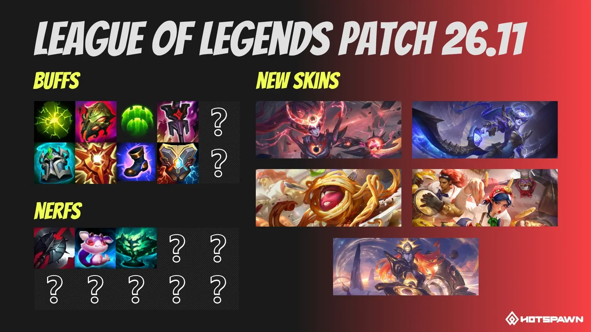

El parche 26.11 llega a los servidores de League of Legends el 28 de mayo de 2026, y trae uno de los cambios de sistema más discutidos en la comunidad en lo que va del año. El rework del aggro de minions está en el centro de la tormenta, pero hay bastante más para hablar: el Imperial Mandate se reconstruye casi de cero, varios keystones de soporte se ajustan y llegan skins italianas que probablemente son las más graciosas del año.
El rework del aggro de minions: el cambio más polémico
Riot decidió reformular cómo los creeps cambian de objetivo en el juego. El sistema anterior permitía maniobras avanzadas de manipulación de oleada que los jugadores de nivel alto habían cultivado durante años — básicamente podías hacer que los minions ignorasen a un enemigo de maneras muy específicas que requerían timing y conocimiento profundo.
Con el parche 26.11, muchas de esas interacciones desaparecen. La comunidad está dividida en dos: los jugadores de toplane y jungla de alto nivel están furiosos porque pierden expresión de skill genuina, mientras que el jugador promedio celebra que finalmente va a poder saber claramente si los creeps lo están atacando a él o no. Las dos posturas son válidas.
Lo que sí queda claro es que Riot priorizó accesibilidad y claridad por sobre la profundidad de la mecánica. Es consistente con la dirección del juego desde la Season 2. Si jugás ranked normal esto probablemente no te afecte demasiado en el día a día — si sos jugador competitivo de alto nivel, es un cambio real.
Imperial Mandate: rework de ítem
El Imperial Mandate recibe la mayor transformación de ítems en el parche. La nueva receta y stats son los siguientes:
Nueva receta: Blasting Wand + Bandleglass Mirror + 650 de oro = 2400 de oro total. Stats: 65 AP (antes 60), 15 de Ability Haste (antes 20), 150% de regeneración de maná (antes 125%). Además incorpora dos pasivos nuevos: +15 de Ability Haste a habilidades que inmovilicen, e inmovilizar a un enemigo lo marca por 4 segundos aumentando el daño recibido en 6%.
En la práctica, el Mandate se convierte en un ítem para soportes con CC duro. Lulu, Nautilus, Thresh, Leona — cualquier support que tenga root o stun va a ver más valor. Los de poke-support pierden algo de Haste pero ganan maná sostenido.
Buffs a tanks de support: Aftershock, Guardian, Locket
El parche también mete buffs directos a los keystones y ítems de tank support, que venían debilitados en el meta actual. Aftershock sube sus resistencias base de 35 a 45. Guardian reduce su cooldown máximo de 90 a 75 segundos. Locket of the Iron Solari gana 5 puntos en armadura y resistencia mágica. Knight's Vow mejora tanto el redireccionamiento de daño (12% → 14%) como la curación (10% → 12%).
Otros ajustes incluyen una baja a Dream Maker (daño y damage reduction reducidos), nerf a Echoes of Helia (daño almacenado baja de 35% a 30%), nerf a Summon Aery (escudo base baja de 30-100 a 20-100) y un rework de pasivo en Zeke's Convergence, que ahora se activa después de 5 segundos en combate en vez de con el ult.
Para Senna, la gran protagonista del parche 26.10 gracias a la interacción con Black Cleaver, el 26.11 es un doble golpe: Black Cleaver ya no interactúa con ítems y runas de la misma manera, y Summon Aery — que muchos Senna usaban — también se debilita. Probablemente la veas mucho menos en soporte.
Las skins de cocina italiana
En el frente cosmético, Riot lanzó la línea Italian Cuisine. Vel'Koz, Illaoi, Irelia y Sion reciben skins de comida italiana. Spaghetti alla Vel'Koz a 1820 RP, Pasta Maker Illaoi a 1350 RP, Breadsticks Irelia a 1350 RP y Pizza Chef Sion a 1350 RP. Además, Diana y Leona reciben sus skins de Eternal Aspect, con la versión Eclipse de Diana disponible exclusivamente a través del Sanctum.
El parche 26.11 llega el 28 de mayo. El preview actual no incluye cambios de campeones todavía — es posible que lleguen más detalles antes del lanzamiento.